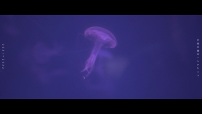
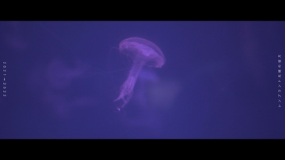

レンブラント光線の彼方
2021.12 / Film / Director
 

2021→2022
冬のある朝に、日の出を撮りに行った。早起きしてカメラと三脚を担いで。
氷点下のなか自転車を走らせ、お気に入りのスポットにつくと空が白んできて気がつく。今日は曇りじゃないか。
これじゃあ朝日は見えないなあと思いながらカメラを構える。
6:50、今日の太陽が起きてくる時間。1分、2分、3分。雲間からささやかなレンブラント光線が降り注いだ。
初日の出はみんなが見るけれど、今日のささやかすぎるほどにささやかなレンブラント光線は私だけのものだ。